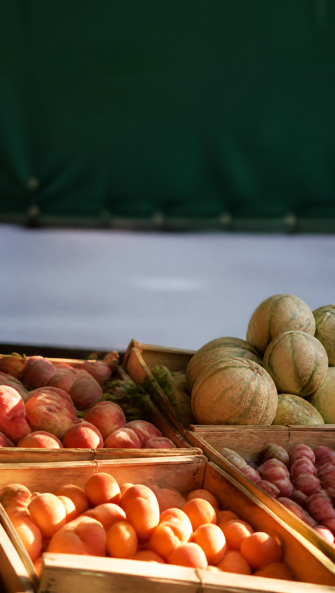

Aux Jardins de Marcel
Fin de
saison
sur
tous les fruits d’été
Ce week-end,
jusqu’à épuisement
Fin de saison
−30
%
fruits d’été
Aux Jardins de Marcel
42 rue de Marseille — Lyon 7
e
Samedi
8h – 19h
Dimanche
8h – 13h
Marcel & sa fille, depuis 1998
merci, à samedi !